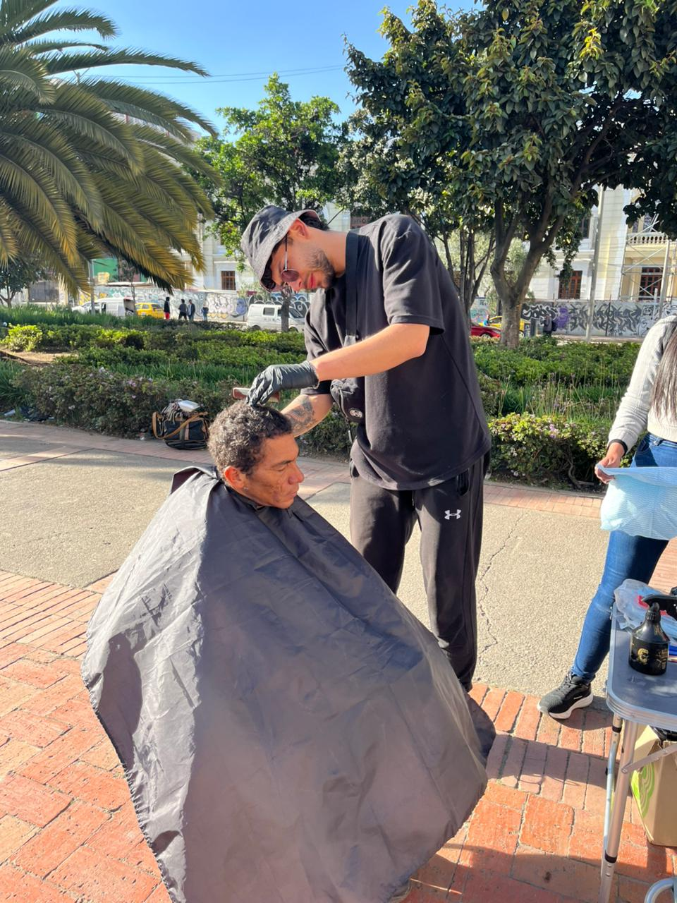
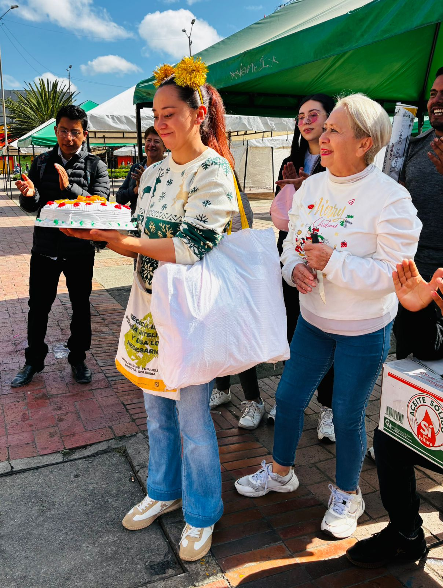
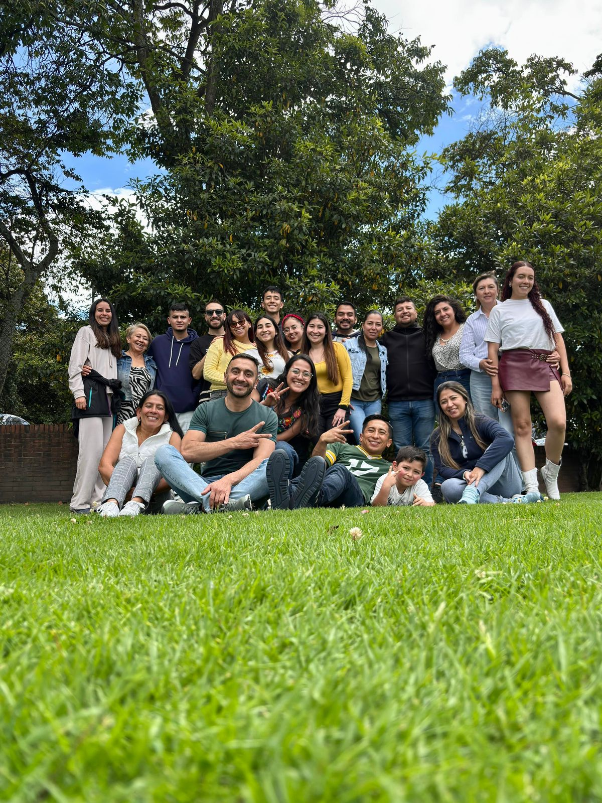

Quiénes somos
Somos un proyecto social en construcción, sin fines de lucro iniciado el 19 de marzo del 2023 que trabaja por la dignificación de niñas, niños, adolescentes y jóvenes en condiciones de vulnerabilidad en Colombia, mediante acciones de voluntarios capacitados, consolidación de alianzas estratégicas con entidades públicas y privadas, y atención oportuna y concreta que contribuya al mejoramiento de la calidad de vida de dicha población a través de un enfoque cristocéntrico e integral.
Dignificar a niñas, niños, adolescentes y jóvenes en condiciones de vulnerabilidad en Colombia, mediante un enfoque cristocéntrico que transforme y genere transformaciones estructurales en su calidad de vida.*
Para 2030, DAR será una organización sostenible y autosuficiente con sedes físicas en Colombia y países de la región, reconocida nacional e internacionalmente por su trabajo en la dignificación y transformación de condiciones de vulnerabilidad en niñas, niños, adolescentes y jóvenes.
Nuestro propósito
Reconocer a la población objetivo como sujeto de derechos.
Mejorar su calidad de vida mediante un modelo de intervención cristocéntrico e integral.
Contar con voluntarios apasionados y capacitados para el servicio.
Consolidar un grupo de donantes identificado y comprometido con la causa.
Generar alianzas estratégicas con actores que se alineen a la misión institucional.
Lograr autosuficiencia organizacional para un impacto sostenido y duradero.
Liderazgo

Jessica Suarez es una mujer profundamente empática, servicial, analítica, solidaria y trascendental, comprometida de manera apasionada con la transformación social. Cree firmemente en el valor sagrado e inherente de cada ser humano sin excepción, la fuerza del amor y el poder de la acción colectiva. Sueña con abrir caminos, construir puentes y transformar vidas para que niñas, niños, adolescentes y jóvenes en condiciones de vulnerabilidad vivan plenamente. Desea que su trabajo y dedicación tengan un efecto multiplicador que trascienda lo inmediato e inspire a otros para generar un cambio duradero en la sociedad.
"Dar es sembrar en otros, pero también florecer por dentro."
Únete
Del latín voluntarius, que significa "por elección propia". Este proyecto es posible gracias a nuestros voluntarios: personas inquietas, generosas, empáticas y altruistas. Sus acciones impactan positivamente la vida de otros y, a la vez, les permiten así mismos avivar su humanidad, potenciar sus dones y talentos y pertenecer a una comunidad que cree en el poder de la acción colectiva. Te invitamos a que te sumes como voluntario(a) y seas parte del cambio que el mundo necesita.
Quiero ser voluntario(a)
Cómo actuamos

Compartir es el primer acto de amor que transforma vidas: un plato de comida caliente, un momento de escucha genuina, una palabra que restaura la dignidad. Aquí extendemos las manos y abrimos el corazón a quienes más lo necesitan, recordando que en cada gesto de generosidad late la imagen de Dios.

Nuestra segunda línea busca acompañar a niñas, niños, adolescentes y jóvenes que quieran y decidan, en cualquiera de nuestras entregas de COMPARTIR, reincorporarse a su núcleo familiar, ingresar a una institución de rehabilitación o centro de acogida a través del acompañamiento de un/a voluntario(a) durante dicho proceso y con la dirección del equipo psicosocial de la iniciativa.

Esta línea pretende atender las condiciones de vulnerabilidad en niñas, niños, adolescentes y jóvenes que no quieran reincorporarse sino que además, busquen mejorar su calidad de vida a través del acompañamiento de voluntarios y potenciando sus capacidades con la ayuda de herramientas y acciones que generen transformaciones estructurales a largo plazo para el beneficio.

Como pescadores de hombres, llevamos la Palabra de Cristo a quienes viven en las orillas del olvido, sembrando esperanza donde hay desesperanza. Esta línea genera una transformación total — espiritual y terrenal — que convierte vidas rotas en testimonios vivos del poder de la gracia y el amor de Dios.
Sostenibilidad
Cada producto de nuestra colección lleva impreso el propósito de DAR. Al adquirir nuestra mercancía, no solo llevas un objeto contigo: llevas una historia, una esperanza y un impacto real en la vida de niñas, niños y jóvenes en Colombia. ¡Únete a la comunidad de quienes deciden dar con estilo!
Saber más